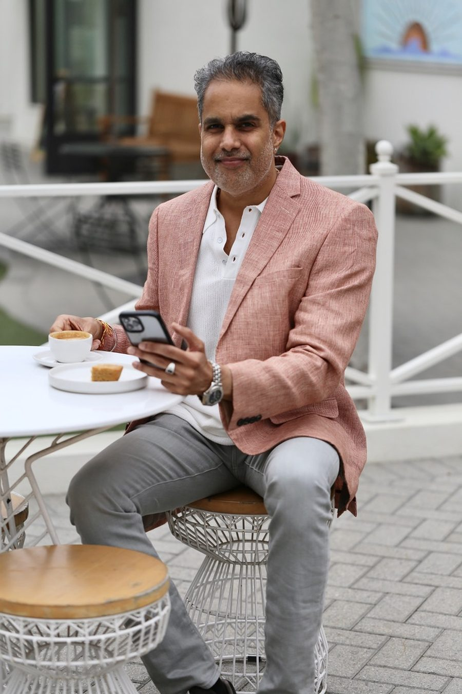
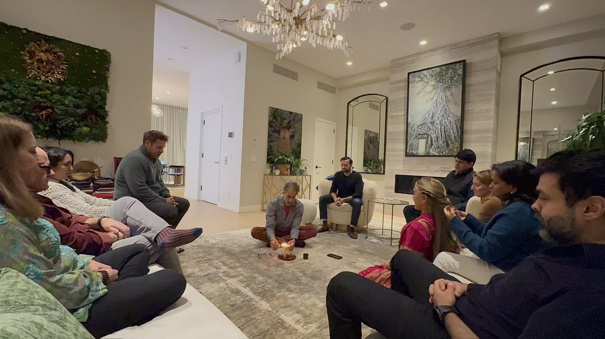
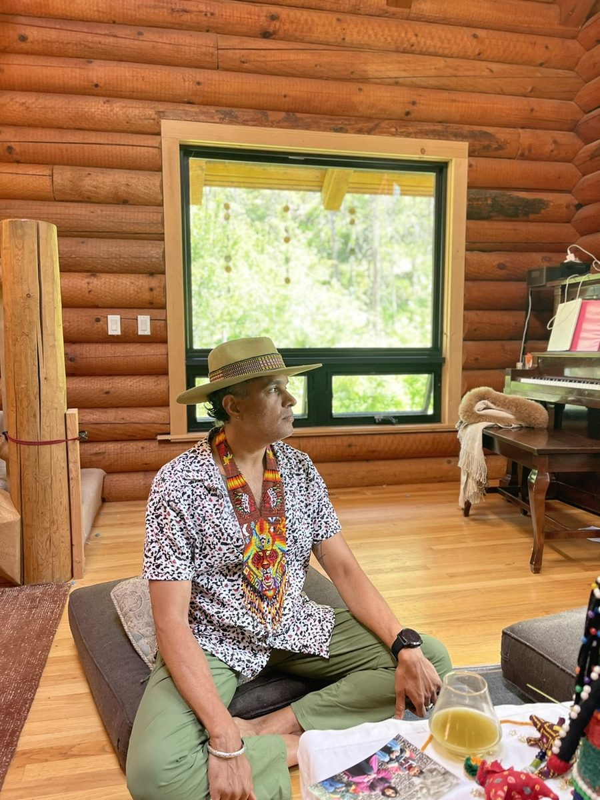

A guided path into a real, lasting practice — taught live, in a small group, by someone who lives this every day.
Reserve Your SeatMost people who want to meditate never really learn how. They download an app, sit for a few confused minutes, and quietly give up — not because meditation doesn't work, but because no one ever taught them what's actually happening, or why it matters.
This course is different. Over five live sessions, you'll learn to calm an overactive nervous system, work with the part of the mind that won't stop talking, and build a practice steady enough to carry you through the pressure of running a company, leading a team, or simply living a full life.
Not another app. Not another thing to feel behind on. A real practice, taught in real time, by someone who's still learning it too.
What meditation actually is, and isn't. How it calms the nervous system, quiets the mind, and softens the parts of life that feel like suffering. Closes with your first guided sit.
Two more approaches, drawn from Yongey Mingyur Rinpoche and Sam Harris, so you can find what actually fits your mind. A longer guided sit, and open space for questions.
A longer sit first, then real conversation about what happened in it — the restlessness, the wandering, the moments of stillness. This is where it stops being theory.
An introduction to a different relationship with what arises — the idea that a hard thought or feeling isn't all of you, just a part of you trying to help. A gentler, more spacious way to sit with discomfort.
How much is enough, what to do when you miss a day, and how to keep this alive once the course ends. We close with reflection, and a look at what deeper work with this can look like.
After the group sessions end, we meet one-on-one to talk about what came up for you specifically — your practice, your obstacles, your next step.
Anyone who wants to meditate but has never had it properly taught — especially those carrying more than they let on.


Sachin leads Journey into the Heart, running retreats and ceremonies grounded in looking inside our hearts using a protocol built on Internal Family Systems (IFS), nature immersion, and contemplative practice.
Sachin is currently completing the foundational training in the Tergar Meditation Teacher Program, developed by Yongey Mingyur Rinpoche in the Kagyu and Nyingma lineages of Tibetan Buddhism. Tergar blends traditional meditation instruction — including Mahamudra and Dzogchen teachings — with contemplative neuroscience, making centuries-old practices accessible today. This foundational work deepens the meditation and mindfulness pillar of the Journey into the Heart Method™, grounding Sachin's guidance in a living lineage of authentic practice.
This course is the same practice at the center of his retreats — distilled into five sessions you can begin from home.
This course is taught as a small live group, but the same five sessions can also be done one-on-one, or brought to your team or company, in person or live online. If that fits better, reach out directly and we'll design something around you.
Ask About Private & Team Options